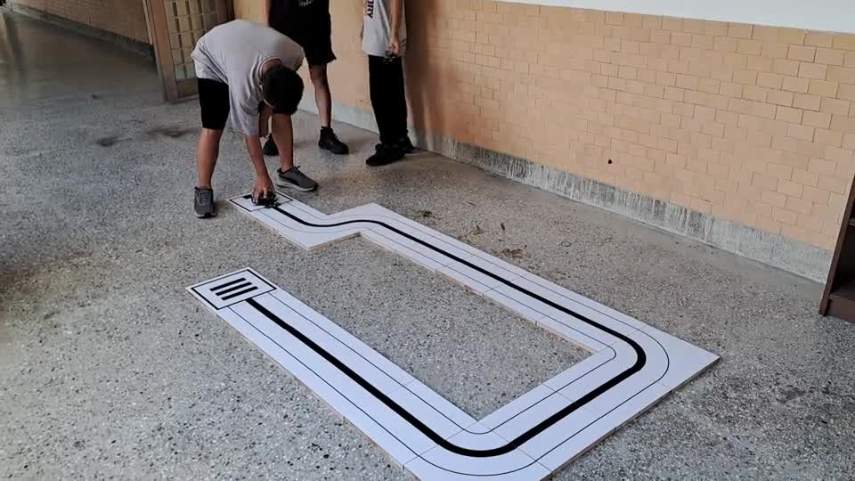
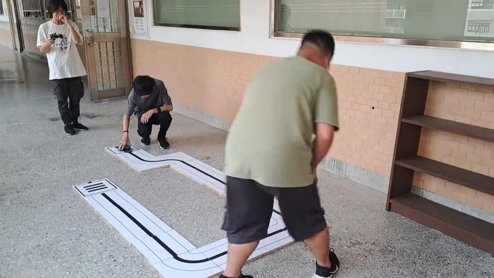

本主題的完成線
- 知道左、右循跡感測器會輸出 0 或 1。
- 能看懂黑線與白底對應的感測值。
- 知道直走、左修正、右修正、停止四種基本規則。
- 讓小車在簡單黑線路徑上做出基本循跡反應。
Topic 3
第三個主題把感測器數值轉成實際行動。這裡先不用 PID，也不講太複雜的調參， 只先學會看兩個循跡感測值，並用最基本的規則讓小車沿著黑線前進。

這個主題會從真實循跡畫面出發，再回到程式理解感測器與轉向規則。
Topic Route
先看感測器值，再理解規則，最後讓小車開始沿線前進。
先知道左右兩個感測器分別在看哪裡，等一下程式才知道要用哪個值做判斷。

先用暖身程式讀出左邊與右邊的值，確認黑線與白底時會看到什麼變化。

左黑右黑就直走，左黑右白就左修正，左白右黑就右修正，兩邊都白先停止。

把感測器與馬達控制接在一起，小車就能開始做出最基本的循跡反應。

Two Programs
這個主題先用暖身程式看懂兩個感測器值，再進入最簡單的循跡主程式。
Real Demo
這兩段影片可以先幫學生建立目標感，知道第三主題完成後，小車會做出什麼樣的效果。
Main Program
這是循跡入門版，只先做簡單規則控制，不加入 PID。目的不是追求最穩，而是讓學生先看懂循跡邏輯。
載入中...Code Walkthrough
這個主題最重要的不是程式行數，而是把「感測值」和「轉向動作」連在一起。
先用左右兩個輸入腳位讀取黑線感測器值，作為後續判斷基礎。
每次迴圈都先取得左右兩邊目前看到的是黑線還是白底。
左黑右黑直走，左黑右白左修正，左白右黑右修正，兩邊都白先停止。
這份程式先理解基本循跡規則，下一個主題再談更細的控制調整。